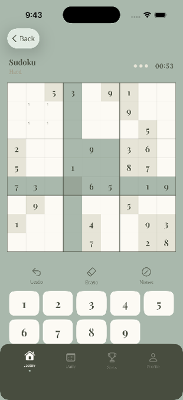
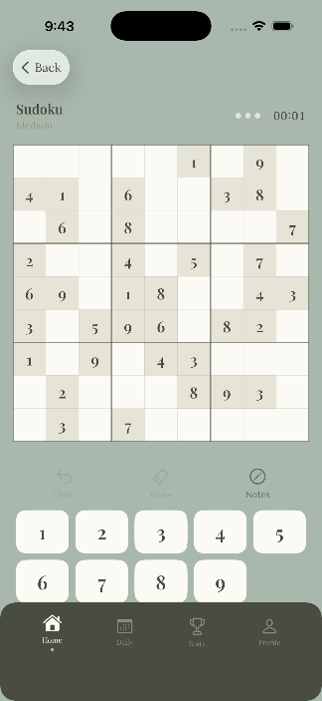
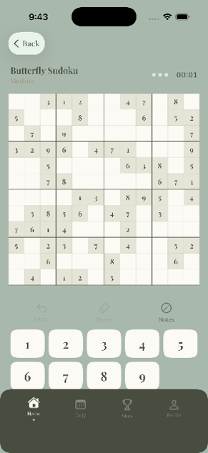
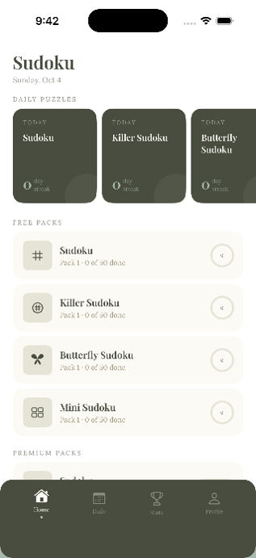
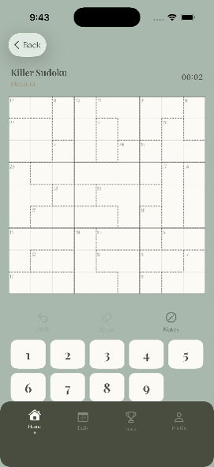

Welcome to Sudoku+, the only Sudoku game on the market that includes Mini Sudoku, Regular Sudoku, Butterfly Sudoku, and Killer Sudoku all in one! The game also features daily puzzles in easy, medium, and hard modes, as well as very relaxing gameplay to calm down and reset your day.
This jam-packed Sudoku game has enough puzzles in it to keep you entertained for days on end. But seriously, try your best to get through them all: that’s a challenge!
You may be thinking to yourself right now, “I’ve heard of regular Sudoku and Mini makes sense, but what on earth are Killer and Butterfly Sudokus?”
Well, Killer Sudoku is a special version where you utilize your math skills as well as your number skills. The game is played the same as normal Sudoku where every box, row, and column have numbers 1-9 in one of each space, except instead of numbers being given to you, you get small indicator numbers showing you how different spaces add up. For example, if two spaces next to each other are 4 and 5, you will get a hint that those spaces add up to 9. This means it could be 1 and 8, 2 and 7, 3 and 6, or 4 and 5. You have to use all these additional hints to solve the puzzle!
On the other hand, Butterfly Sudoku could be seen as a more advanced Sudoku. Instead of being 9x9, the grid adds extra spaces on each outside edge, which happens to turn it into a butterfly-like shape. You play the same as regular Sudoku, where every 9 spaces have no repeated numbers, but then you add on an extra 3 to every row and column, which only follow the rules of the immediate numbers in those rows and columns.
If any of that doesn’t make sense, which it probably doesn’t, I think the best way to learn these new games is to try them. So go ahead and download Sudoku+ to find out for yourself how awesome these new games are! Don’t worry, the app is totally free, unless you want some extra puzzles once you’ve beaten the game.